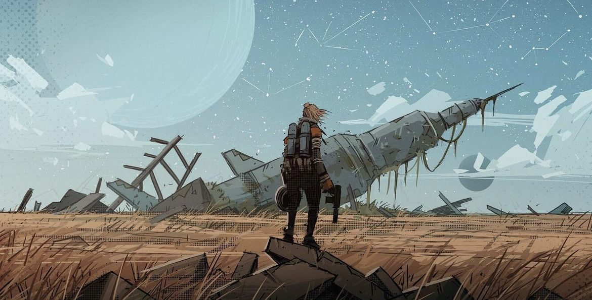
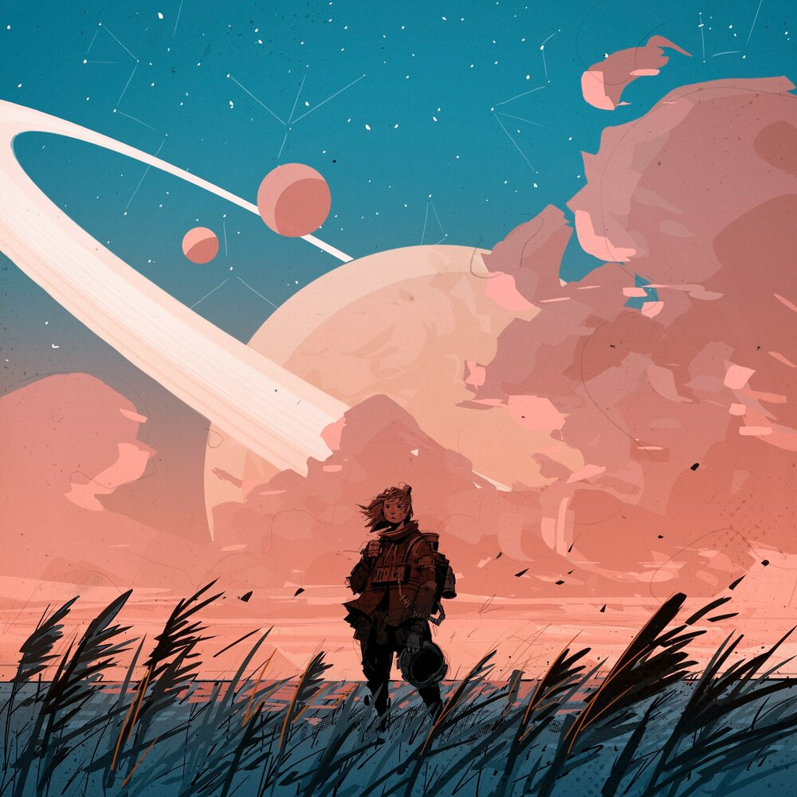
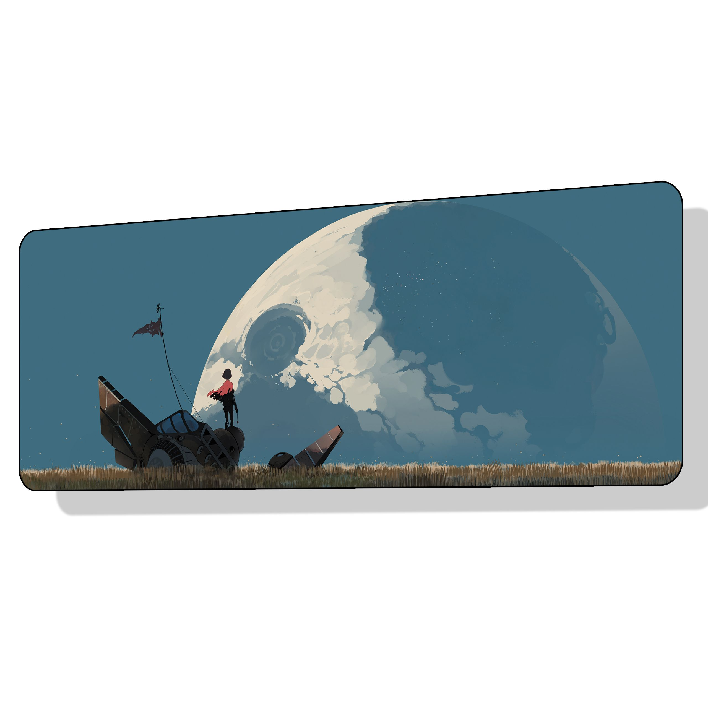
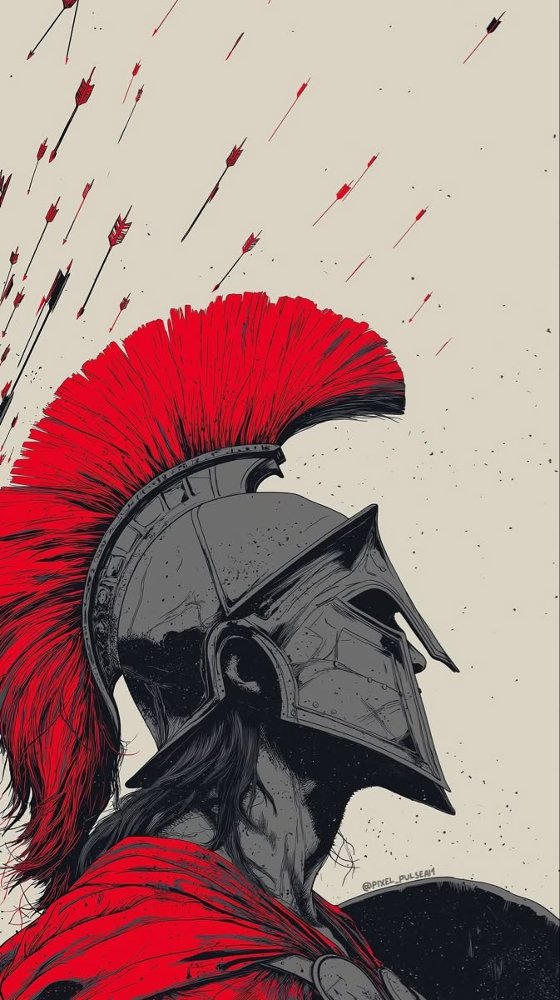
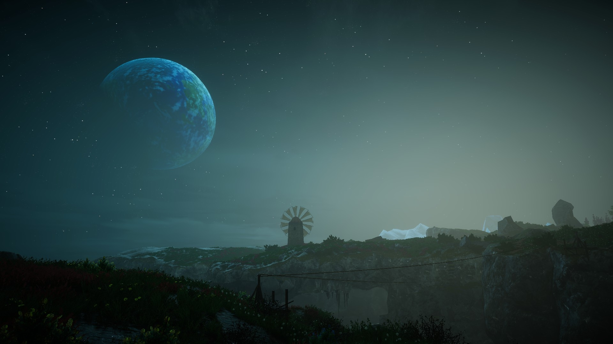

✳ An atlas of impossible places
The quietbeyond.
For the part of you that never stopped wandering.
01The Pale Frontier

✳ An atlas of impossible places
A sunthat sleeps.
Stay a little. The light is different here.
02The Sleeping Sun

✳ An atlas of impossible places
The lastlight.
An ocean of sky. A shore of your own.
03The Lunar Shore

✳ An atlas of impossible places
A firewithin.
Some worlds are found. Others are forged.
04The Crimson Oath

✳ An atlas of impossible places
Wheresilence lives.
Even the stars seem to hold their breath.
05The Blue Hour